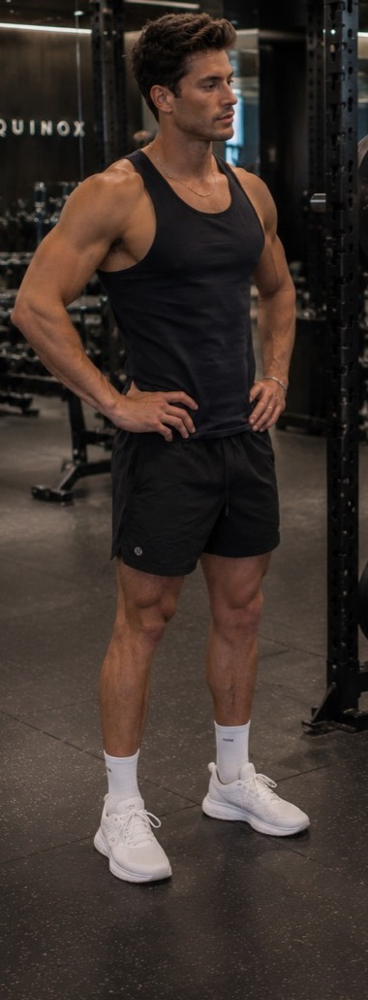

Character A
Dark-Haired Fit Gym Friend
Voice: Roger - Laid-Back, Casual, Resonant
- Keep dark wavy volume, tan skin, defined jawline, and calm confident expression.
- Wardrobe stays black sleeveless tank, black shorts, white crew socks, white trainers, thin chain.
- No beard, hat, sunglasses, tattoos added, bulky redesign, or outfit color change.